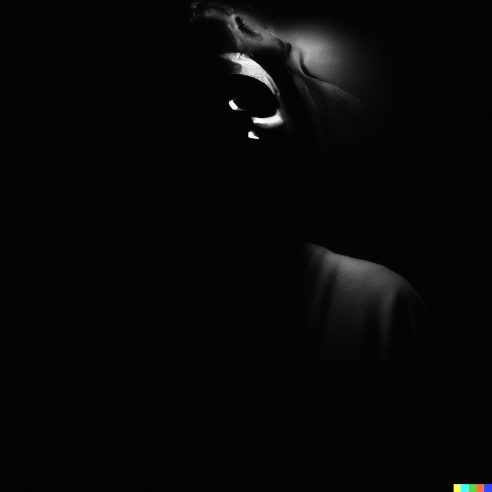

Prologue
Lieu inconnu
Vous prenez la clé en forme de balance et vous l'insérez dans l'étrange serrure vous tournez la clé mais la porte refuse de
s'ouvrir,paniqué vous réssayez mais aucun résultat vous entendez des bruits de pas ils semblent assez loin. Emplis de terreur
vous tentez d'enfoncerla porte de toute vos forces et de votre volonté mais rien n'y fait, dans un ultime geste de déséspoir
vous essayer de récupérer l'autre clé mais quand vous vous retournez vous voyez la dernière image de votre vie:
celle du visage froid de la créature malfaisante...

Vos choix ont mené à la mort du junkie
 Choix précèdent
Choix précèdent